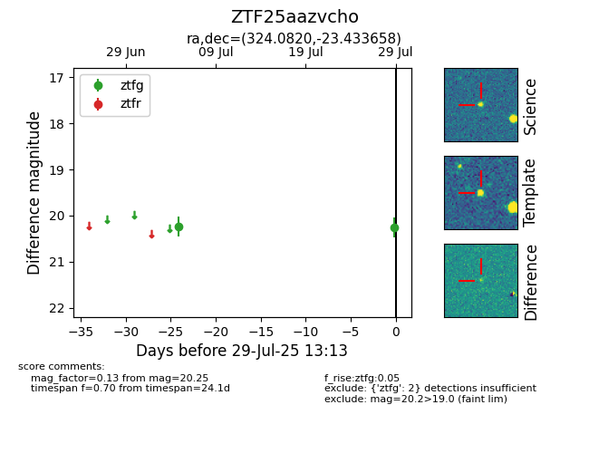

Target ZTF25aazvcho at 2025-07-29 13:13, see:
FINK: fink-portal.org/ZTF25aazvcho
Lasair: lasair-ztf.lsst.ac.uk/objects/ZTF25aazvcho
ALeRCE: alerce.online/object/ZTF25aazvcho
alt names
ZTF25aazvcho (ztf,fink)
coordinates:
equatorial (ra, dec) = (324.0820,-23.43366)
galactic (l, b) = (26.4643,-46.00945)
photometry
last ztfg=20.25
2 ztfg detections
